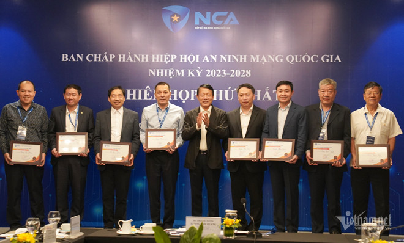

Thượng tướng Lương Tam Quang, Thứ trưởng Bộ Công an, Chủ tịch Hiệp hội An ninh mạng quốc gia chủ trì phiên họp thứ nhất của Ban chấp hành Hiệp hội. (Ảnh: N.Mai)
Tại phiên họp, bên cạnh việc thảo luận, cho ý kiến về một số dự thảo văn kiện của Hiệp hội và các nhiệm vụ trọng tâm cần tập trung triển khai trong năm 2024, Ban chấp hành Hiệp hội An ninh mạng quốc gia cũng đã thống nhất bầu bổ sung Thứ trưởng Bộ TT&TT Nguyễn Huy Dũng vào Ban chấp hành, làm Phó Chủ tịch Hiệp hội.
Theo phân công nhiệm vụ của các thành viên Ban chấp hành Hiệp hội An ninh mạng quốc gia đã được các đại biểu nhất trí thông qua, với vai trò là Phó Chủ tịch Hiệp hội, Thứ trưởng Nguyễn Huy Dũng sẽ chỉ đạo kết nối hoạt động của Hiệp hội với các cơ quan thuộc Bộ TT&TT; đồng phụ trách Ban Nghiên cứu, tư vấn chính sách, pháp luật, bao gồm việc chịu trách nhiệm xây dựng kế hoạch, theo dõi, nắm bắt tình hình hoạt động, khó khăn vướng mắc và chỉ đạo, điều hành ban này.
Bên cạnh đó, Thứ trưởng Bộ TT&TT Nguyễn Huy Dũng cũng tham gia phối hợp phụ trách Ban Truyền thông của Hiệp hội, đóng góp trong việc xây dựng và tổ chức các hoạt động chuyên môn của ban.

Chủ tịch Hiệp hội An ninh mạng quốc gia Lương Tam Quang trao Kỷ niệm chương, Giấy chứng nhận cho các thành viên Ban chấp hành Hiệp hội. (Ảnh: N.Mai)
Cũng tại phiên họp đầu tiên của Ban chấp hành Hiệp hội An ninh mạng quốc gia, các thành viên Ban chấp hành đã thống nhất thông qua kế hoạch hoạt động năm 2024 với 9 nhóm nội dung công việc chính, trong đó có việc hoàn tất các thủ tục thành lập Hiệp hội; hoàn thiện cơ cấu tổ chức của Hiệp hội; phát triển hội viên; tổ chức một số sự kiện, hoạt động; truyền thông, đối ngoại; tham vấn, tư vấn, phản biện chính sách pháp luật về an ninh mạng; hợp tác quốc tế về an ninh mạng...
Hiệp hội An ninh mạng quốc gia được thành lập tháng 9/2023, là tổ chức xã hội - nghề nghiệp của công dân và tổ chức Việt Nam hoạt động trong lĩnh vực an ninh mạng.
Sứ mệnh và tầm nhìn của Hiệp hội này đã được xác định rõ là không chỉ tạo ra lợi nhuận kinh tế mà phải hướng tới mục tiêu trở thành động lực cho sự nghiệp xây dựng và bảo vệ Tổ quốc.
Tại Đại hội đại biểu toàn quốc lần thứ nhất của Hiệp hội An ninh mạng quốc gia diễn ra ngày 8/9, Ban chấp hành Hiệp hội đã được bầu, với Chủ tịch là Thượng tướng Lương Tam Quang, Thứ trưởng Bộ Công an. Thời điểm đó, Ban chấp hành Hiệp hội nhiệm kỳ 2023 - 2028 có 6 Phó Chủ tịch, với Phó Chủ tịch thường trực là Trung tướng Nguyễn Minh Chính, Cục trưởng Cục An ninh mạng và Phòng, chống tội phạm sử dụng công nghệ cao (A05, Bộ Công an).
Nguồn: Vietnamnet